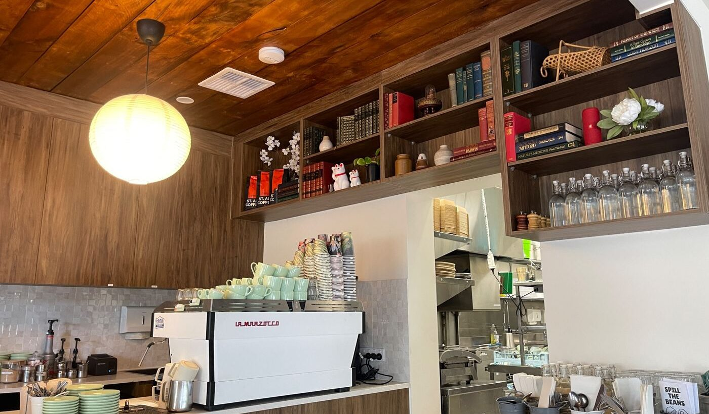

About us
Your friendly neighborhood cafe near you ❤️ Monday - Sunday 7:00AM - 3:00PM (Kitchen Closed 2 PM) Pet Friendly 🐶 Brunch ꕥ Coffee ꕥ Cafe ꕥ Restaurant Instagram:@spillthebeansadelaide
Our Story

As an Asian owned cafe, we naturally gravitate toward a fusion of Western and Asian flavours without limiting ourselves to one cuisine. If something tastes good, we serve it. If it does not, we would not serve it to our friends, family, or customers.
Dogs are still very much part of the cafe, and so are cats. We have many cat owning customers who bring their furry friends along, and our veranda continues to host early morning dog meet ups almost every day.”
PRESS
SPILL THE BEANS CAFE in the news
Glam Adelaide featured SPILL THE BEANS CAFE returning after renovations with a brighter, calmer, revived space for Linden Park locals.
Read the Glam Adelaide articleFAQ
Frequently asked questions
Do you take reservations?
Yes, we do! Walk-ins are always welcome, but we recommend making a reservation, especially if you are coming with a larger group. You can call us on (08) 8338 3899 during opening hours, or message us on social media and we will get back to you as soon as we can.
Do you accept walk-ins?
Yes, absolutely! Walk-ins are always welcome. If we are busy, we will do our best to seat you as soon as possible.
Can you accommodate vegetarians, vegans, gluten-free diets, or other dietary needs?
Yes, we will always do our best to help with dietary needs, allergies, and preferences. Please let our team know when you order, so we can recommend suitable options and check with the kitchen where needed.
Do you have parking?
Yes, there is street parking directly in front of the cafe and around the surrounding streets.
Can we bring our own cake or wine?
You are welcome to bring your own cake if you are celebrating something special. Alcohol is not permitted, as we like to keep SPILL THE BEANS CAFE a relaxed, family-friendly space for everyone, including children.
Are you kid friendly?
Yes! We love welcoming families and little ones into our space. We have kid-friendly options available, and many of our regular menu items are also suitable for children. We try to keep our dishes approachable and not too spicy, so everyone can enjoy them.
Do you sell gift cards?
Yes, we do! You can purchase gift cards in-store, or email us at admin@spill.cafe for any enquiries.
Do you allow fluffy friends on the verandah?
Yesss! We love welcoming fluffy friends on our verandah. Please keep them leashed and out of the walkway, so everyone can enjoy the space safely and comfortably.
Do you offer takeaway?
Yes, we offer takeaway for coffee, drinks, and food. You can order at the counter, and our team will prepare everything for you as quickly as possible.